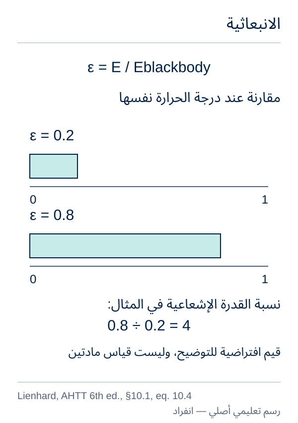

الانبعاثية
Emissivity
قدرة السطح على إشعاع الحرارة مقارنة بسطح أسود مثالي عند درجة الحرارة نفسها؛ السطح اللامع يشع أقل من السطح الخشن الداكن.
قدرة السطح على إشعاع الحرارة مقارنة بسطح أسود مثالي عند درجة الحرارة نفسها؛ السطح اللامع يشع أقل من السطح الخشن الداكن.
الانبعاثية الكلية النصف كروية ε هي نسبة التدفق الإشعاعي الصادر من سطح حقيقي q″_e إلى التدفق الصادر من جسم أسود عند درجة الحرارة نفسها q″_b؛ وتُعرَّف طيفياً بمكاملة الانبعاثية الطيفية ε_λ موزونة بالتدفق الأسود على كل الأطوال الموجية.
الانبعاثية تختلف عن الامتصاصية: الانبعاثية تخص الإشعاع الصادر والامتصاصية تخص الوارد، ويتساويان عند درجة حرارة واحدة بحسب قانون كيرشوف. وتختلف عن الانعكاسية: السطح العاكس قليل الانبعاثية. وتمييز حاسم: الانبعاثية العمودية ε_n (مقيسة عمودياً على السطح) ليست الانبعاثية الكلية النصف كروية ε، ولا تُقارن قيمة من نوع بقيمة من نوع آخر. وتمييز ثالث: الانبعاثية الطيفية ε_λ تختلف عن الكلية ε، والجسم الرمادي هو الحالة التي تكون فيها ε_λ ثابتة.
ذهب مصقول 0.025 مقابل ذهب غير مصقول 0.47 — نحو 19 ضعفاً عند حرارة الغرفة (Janna ص 41).
كيف تعمل الظاهرة؟
الانبعاثية ليست خاصية ذرية ثابتة بل نتيجة لسلوك السطح عند السطح نفسه: الإشعاع الصادر من داخل المادة يُعاد توزيعه عند السطح، والسطوح المعدنية المصقولة تعكس معظم الإشعاع الوارد فتشع قليلاً (انبعاثية منخفضة)، بينما الطبقات المؤكسدة أو الخشنة أو المطلية تعمل كوسط ممتص فترفع الانبعاثية. ولهذا يذكر Janna أن أكاسيد الزنك والألمنيوم التي تتكون على السطح قد ترفع الانبعاثية ارتفاعاً معتبراً، وأن الصقل والتلميع والطلاء والأنودة عمليات لها تأثير حاكم. والانبعاثية تتغير أيضاً مع زاوية النظر: منحنيات الشكل 11.15 تقترب من الصفر عند 90°، وتختلف بين الموصلات واللافلزات.
العلاقة بالأرقام
ε مقدار لا بُعدي بين 0 و1. ألمنيوم مصقول 0.04، ألمنيوم خشن 0.07، ذهب مصقول 0.025، ذهب غير مصقول 0.47، ألمنيوم مدرفل ومصقول 0.039 (جدول E.1)، بورسلين 0.93، فتحة تجويف 0.9934. الإشعاع الصادر من سطح غير أسود: q″_e = εσT⁴ (المعادلة 11.36). وفي مصدر مستقل: ألمنيوم مصقول 0.04–0.07 على 300–900 K، وذهب 0.02–0.026 على 600–1000 K، وذهب مصقول «as low as 0.02». ونسبة الانبعاثية النصف كروية إلى العمودية 1.0–1.3 للموصلات.
مفاهيم متقاربة
أربعة تمييزات: (1) ε ≠ α (الانبعاثية للصادر، الامتصاصية للوارد؛ ε = α عند نفس الحرارة بحسب كيرشوف). (2) ε ≠ ρ (العاكس قليل الانبعاثية). (3) ε العمودية ≠ ε الكلية النصف كروية — وهذا أشيع خطأ في نقل قيم الجداول، والمصدر المستقل يعطي النسبة 1.0–1.3 للموصلات. (4) ε_λ ≠ ε، والجسم الرمادي حالة خاصة لا قاعدة.
حدود التطبيق
حدود إلزامية: (أ) لا تُنقل قيمة انبعاثية بلا المادة وحالة السطح ودرجة الحرارة ونوع القيمة (عمودية/كلية/طيفية). (ب) القيمة 0.04 في نص Janna و0.039 في جدول الملحق لنفس المادة — فرق يجب إعلانه لا تسويته. (ج) الانبعاثية تتغير مع الحرارة للموصلات بنص Janna، لكن الاتجاه ليس واحداً لكل السبائك: Wen & Mudawar وجدا أن ألمنيوم 1100 تنقص انبعاثيته مع الحرارة، وأن 7150 وحدها تزيد — فلا تُعمَّم قاعدة «تزيد مع الحرارة». (د) قيم E2 معادلات ارتباطية من مرجع تجميعي (Touloukian TPRC Vol.7) لا قياس مباشر في تلك الورقة؛ تُنسب إلى مصدرها الأصلي عند الاقتباس. (هـ) قيمة 0.05 من E3 تقريبية من رسم، لا تُنقل كرقم دقيق.

| الكمية | القيمة | المصدر |
|---|---|---|
| انبعاثية ألمنيوم مصقول — نطاق القيمة في مصدر مستقل | 0.04–0.07 | [1] |
| انبعاثية ذهب — نطاق القيمة في مصدر مستقل | 0.02–0.026 | [1] |
| انبعاثية ذهب مصقول عند حرارة منخفضة — نص المصدر | 0.02 | [1] |
| انبعاثية ألمنيوم مصقول — قياس طيفي مستقل | 0.05 | [2] |
| نسبة الانبعاثية النصف كروية إلى العمودية للموصلات | 1.0–1.3 | [1] |
| أثر تصحيح بلانك على الانبعاثية الكلية للمعادن | 8 % | [1] |
المصادر
- 1 A compilation of data on the radiant emissivity of some materials at high temperatures — §2 The Definition of Surface Emissivity؛ §3؛ Appendix TABLE A1 — Elsevier — Journal of the Energy Institute (Jones, Mason, Williams). eprints.whiterose.ac.uk/id/eprint/133266/7/emissivity%20manuscript%20revision%20%28final%29.pdf · اطُّلع عليه 2026-11-21
- 2 Emissivity characteristics of polished aluminum alloy surfaces and assessment of multispectral radiation thermometry (MRT) emissivity models — Elsevier — International Journal of Heat and Mass Transfer (Wen, Mudawar). engineering.purdue.edu/mudawar/files/articles-all/2005/2005_3.pdf · اطُّلع عليه 2026-11-21
- 3 A Heat Transfer Textbook, Sixth Edition — §10.1 «The problem of radiative exchange», eq. (10.4) — John H. Lienhard V & John H. Lienhard IV — Phlogiston Press, Cambridge MA (open access). bpb-us-e1.wpmucdn.com/sites.mit.edu/dist/6/1810/files/2024/04/AHTTv600.pdf · اطُّلع عليه 2026-11-21
استشهد بهذا المصطلح
الصيغتان مبنيتان من بيانات الصفحة نفسها: العنوان والتاريخ ورابط النسخة المنشورة.
الانبعاثية — Emissivity. (2026). ديوان المعرفة — انفراد. https://infiradev.com/diwan/terms/emissivity.html
@misc{emissivity2026,
title = {الانبعاثية},
titleaddon = {Emissivity},
howpublished = {{ديوان المعرفة — انفراد} — مرجع علمي عربي},
year = {2026},
url = {https://infiradev.com/diwan/terms/emissivity.html},
urldate = {2026-11-21},
note = {مراجعة علمية: عبدالله الهويدي — مراجعة في تطبيق انفراد}
}
راجعه: عبدالله الهويدي — مراجعة في تطبيق انفراد · 2026-11-21 · آخر تحديث 2026-11-21